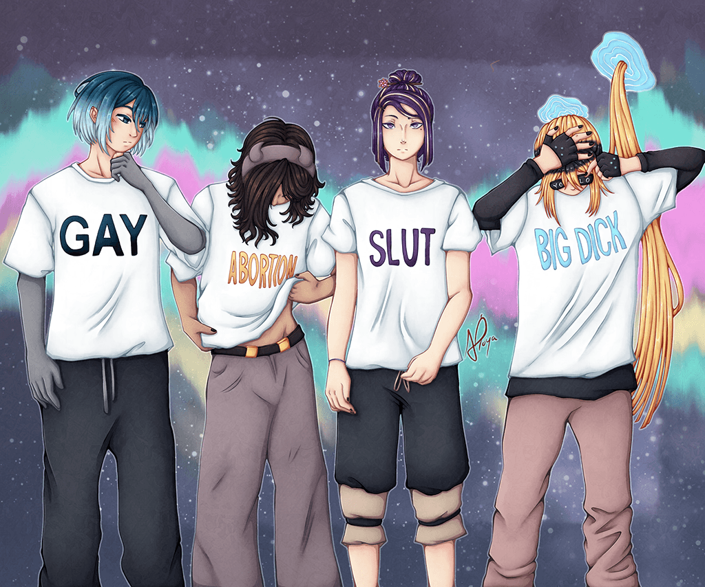
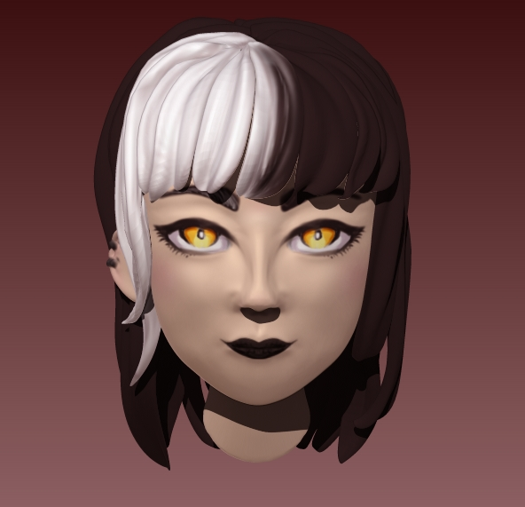

☂︎ Asukara

This is a comic I'm currently working on with a friend. Most of our work for this one is shared/under development in a way where we're not 100% ready to share just yet (I'm primarily the writer and he's primarily the artist), so for now I have these two pieces that I made solely on my own.

This particular 3D sculpture was made in Zbrush, rather than Blender. I hadn't ever used Blender before at the time of making this.